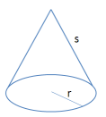
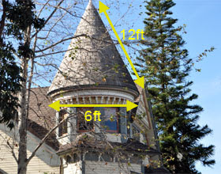

Recall that a cone can be broken down into two parts - the top part with slanted sides, and the circular disc making the base. We can find the total surface area by adding these together.

The base is a circle of radius r. The area of as circle is given by For more, see Area of a circle.
The top section has an area given by
where r is the radius at the base, and s
is the slant height.
See also Derivation of cone area.
The slant height is the distance along the cone surface from the top to the bottom rim. If you are given the perpendicular height, you can find the slant height using the Pythagorean Theorem. For more see Slant height of a cone.
By adding these together we get the final formula: This can be simplified by combining some terms, but we usually keep it this way because sometimes we want the area of each piece separately. (See the example below).

Find the area of roof material needed to cover the conical roof shown below.
Because we are not going to cover the circular base, we only need the area of the top, sloping part of the cone.
From the above we see that the area of of the sloping top is given by The radius r of the cone at its base is 3ft (half the diameter), and the slant height s is 12ft. Substituting these into the formula we get